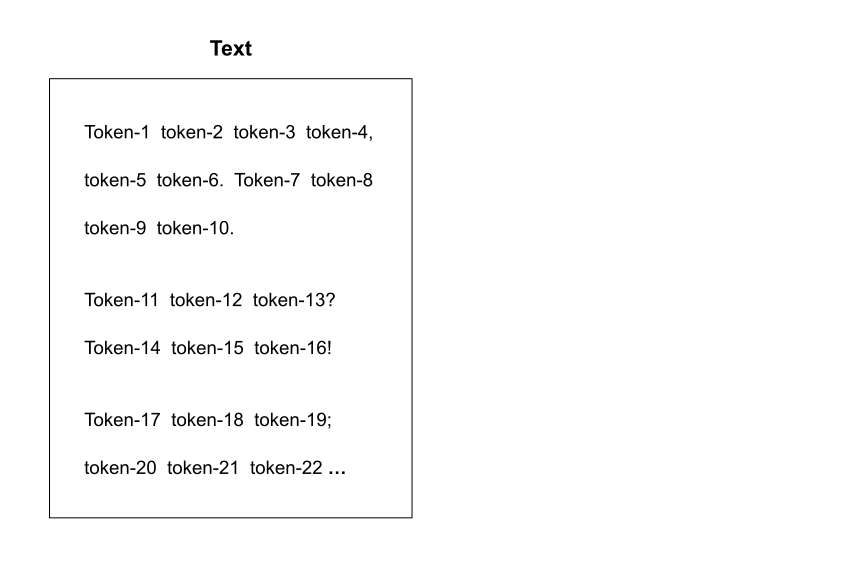
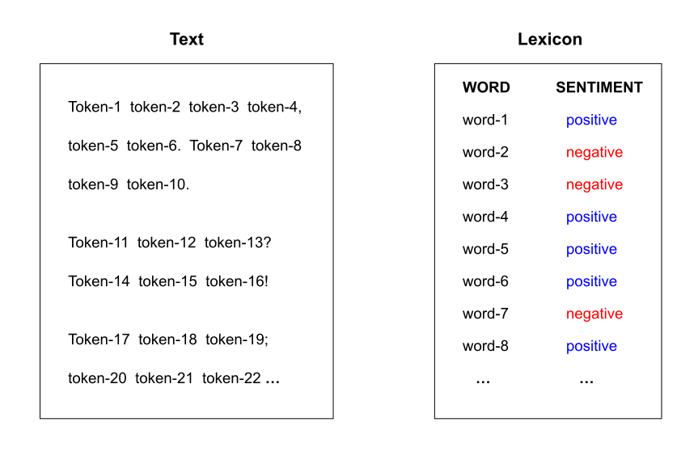
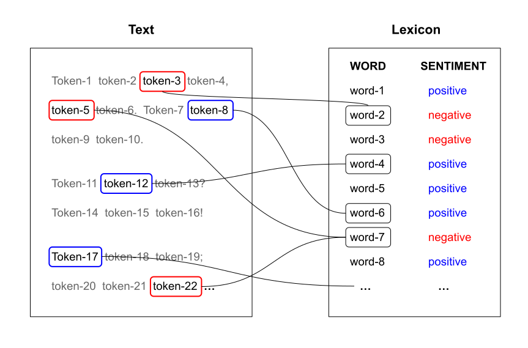
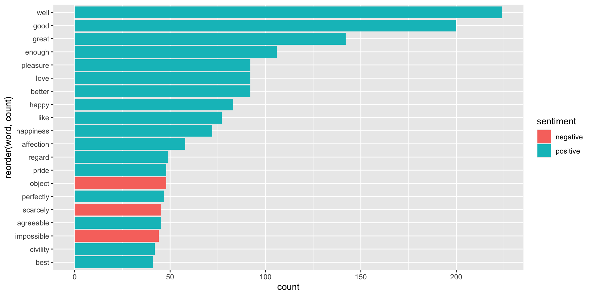

Text Analysis II
Text Mining
Analysis of Pride and Prejudice
Pride and Prejudice (Jane Austen, 1813)

- Questions:
What words are most commonly used?- What is the emotional arc of the novel?
- Steps:
- Access text as computer file
- Read into R
- Data cleaning
- Summary statistics
- Visualization
Last time …
- We used the vector
prideprejudicefrom the package"janeaustenr", - Put it into a tibble for tidytext convenience,
- Tokenize into words, and counted their frequencies.
Sentiment Analysis
Goal: Determine the emotional content of text.
One common approach is to consider the text as a combination of its individual words or tokens, and the sentiment of the whole text as the sum of the sentiment content of the individual words.
This involves assigning a sentiment category to each token, which in turn requires using a Sentiment Lexicon.





Sentiment lexicon example
"tidytext" provides a default sentiment lexicon sentiments
This lexicon has a list of words and their associated sentiment classified into binary categories: negative and positive.
Sentiment lexicons
You can get four lexicons with get_lexicon():1
"bing": from Bing Liu; this lexicon2 categorizes words in a binary fashion into positive and negative categories."afinn": from Finn Arup Nielsen; this lexicon assigns words with a score that runs between -5 and 5, with negative scores indicating negative sentiment and positive scores indicating positive sentiment."nrc": from Saif Mohammad and Peter Turney; this lexicon categorizes words in a binary fashion ("yes"/"no") into categories of positive, negative, anger, anticipation, disgust, fear, joy, sadness, surprise, and trust."loughran": another lexicon somewhat similar to"afinn".
Sentiment lexicons
The sentiment lexicons mentioned in the previous slide can be obtained with the get_sentiments(lexicon = ...) function.
Warning
get_sentiments() is an interactive function that requires manual input. This is okay in an interactive session, but it won’t work when rendering a qmd file or in a shiny document.
It’s better to download the lexicons to a text or an R file, and then import them with a reading function, e.g. read_csv().
# A tibble: 8 × 2
word sentiment
<chr> <chr>
1 2-faces negative
2 abnormal negative
3 abolish negative
4 abominable negative
5 abominably negative
6 abominate negative
7 abomination negative
8 abort negative # A tibble: 8 × 2
word sentiment
<chr> <chr>
1 abandon negative
2 abandoned negative
3 abandoning negative
4 abandonment negative
5 abandonments negative
6 abandons negative
7 abdicated negative
8 abdicates negative Assigning sentiments to words
How would you assign sentiments to words in pride_tokens?
00:45
Assigning sentiments to words
# A tibble: 8,704 × 2
word sentiment
<chr> <chr>
1 pride positive
2 prejudice negative
3 good positive
4 fortune positive
5 well positive
6 rightful positive
7 impatiently negative
8 objection negative
9 enough positive
10 fortune positive
# ℹ 8,694 more rows

Sentiment Scoring
Sentiment Score by Chapter
Another type of sentiment analysis that can be performed on the prideprejudice text is to compute a sentiment score for each chapter in the book.
We need to do a bit of text processing in order to split the text into chapters. Here are the proposed steps:
Collapse
prideprejudiceinto a single element vectorSplit text into chapters using a regex pattern
"Chapter \\d+"2.1) unbox into vector
2.2) get rid of first lines (not a chapter)
Assemble table with columns
"chapter"and"text"
Notice that prideprejudice contains elements indicating where a chapter begins, like element 7 in the following output ("Chapter 1")
We can use these lines of text to detect where a chapter begins.
[1] "By Jane Austen"
[2] ""
[3] ""
[4] ""
[5] "Chapter 1"
[6] ""
[7] ""
[8] "It is a truth universally acknowledged, that a single man in possession"
[1] "dinner."
[2] ""
[3] ""
[4] ""
[5] "Chapter 3"
[6] ""
[7] ""
[8] "Not all that Mrs. Bennet, however, with the assistance of her five"
Goal: Detect where a chapter begins.
Step 1) collapse text into one-element vector
Step 2) split text into chapters using str_split() which returns a list
[1] "PRIDE AND PREJUDICE By Jane Austen "[1] " It is a truth universally acknowledged, that a single man in possession of a good fortune, must be in want of a wife. However little known the feelings or views of such a man may be on his first entering a neighbourhood, this truth is so well fixed ...[1] " Mr. Bennet was among the earliest of those who waited on Mr. Bingley. He had always intended to visit him, though to the last always assuring his wife that he should not go; and till the evening after the visit was paid she had no knowledge of it. It was then ...Substeps 2.2) and 2.1) unbox and remove first element because it’s not a chapter
Step 3) Assemble table of chapters, and their text content
# A tibble: 61 × 2
text chapter
<chr> <int>
1 " It is a truth universally acknowledged, that a single man in pos… 1
2 " Mr. Bennet was among the earliest of those who waited on Mr. Bin… 2
3 " Not all that Mrs. Bennet, however, with the assistance of her fi… 3
4 " When Jane and Elizabeth were alone, the former, who had been cau… 4
5 " Within a short walk of Longbourn lived a family with whom the Be… 5
6 " The ladies of Longbourn soon waited on those of Netherfield. The… 6
7 " Mr. Bennet's property consisted almost entirely in an estate of … 7
8 " At five o'clock the two ladies retired to dress, and at half-pas… 8
9 " Elizabeth passed the chief of the night in her sister's room, an… 9
10 " The day passed much as the day before had done. Mrs. Hurst and M… 10
# ℹ 51 more rowsThen we proceed as usual: tokenizing the text, getting word counts taking chapter into account, and assigning sentiments:
Then we proceed as usual: tokenizing the text, getting word counts taking chapter into account, and assigning sentiments:
Then we proceed as usual: tokenizing the text, getting word counts taking chapter into account, and assigning sentiments:
pride_toks = unnest_tokens(pride_chaps, input=text, output=word)
pride_toks_count = pride_toks |>
count(word, chapter, name = "count", sort = TRUE)
pride_toks_count# A tibble: 40,120 × 3
word chapter count
<chr> <int> <int>
1 the 43 222
2 to 18 214
3 the 18 197
4 of 18 178
5 of 43 157
6 and 43 156
7 and 18 150
8 the 16 140
9 to 47 135
10 to 43 133
# ℹ 40,110 more rowsThen we proceed as usual: tokenizing the text, getting word counts taking chapter into account, and assigning sentiments:
# A tibble: 6,460 × 4
word chapter count sentiment
<chr> <int> <int> <chr>
1 well 47 15 positive
2 good 43 13 positive
3 master 43 13 positive
4 pride 16 11 positive
5 good 49 10 positive
6 happy 55 10 positive
7 great 43 9 positive
8 well 18 9 positive
9 well 40 9 positive
10 accomplished 8 8 positive
# ℹ 6,450 more rows
We need to compute a sentiment score for each chapter:
score = # positive words - # negative words
Sentiment score for each chapter:
score = # positive words - # negative words
# A tibble: 6,460 × 4
word chapter count sentiment
<chr> <int> <int> <chr>
1 well 47 15 positive
2 good 43 13 positive
3 master 43 13 positive
4 pride 16 11 positive
5 good 49 10 positive
6 happy 55 10 positive
7 great 43 9 positive
8 well 18 9 positive
9 well 40 9 positive
10 accomplished 8 8 positive
# ℹ 6,450 more rows
Given pride_sent, how would you obtain chapter_scores?
01:30
# A tibble: 10 × 2
chapter score
<int> <int>
1 1 11
2 2 2
3 3 45
4 4 52
5 5 30
6 6 75
7 7 13
8 8 25
9 9 54
10 10 43